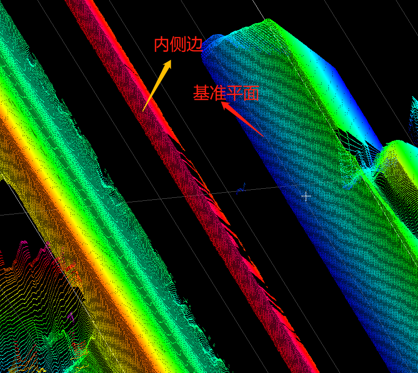
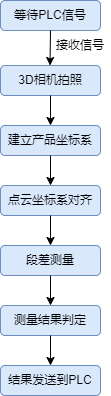
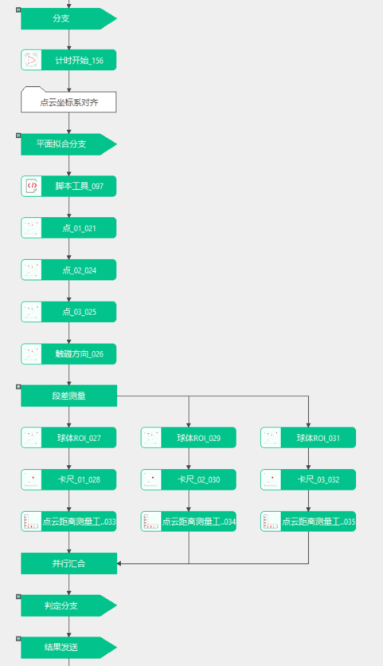
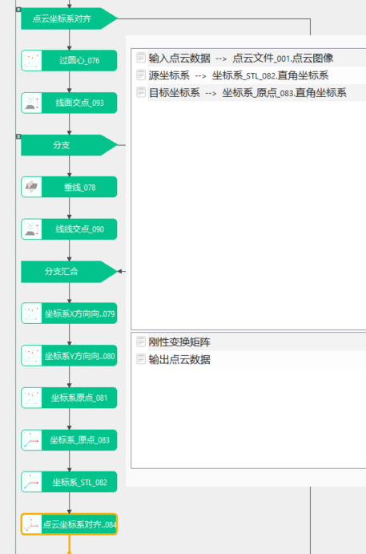
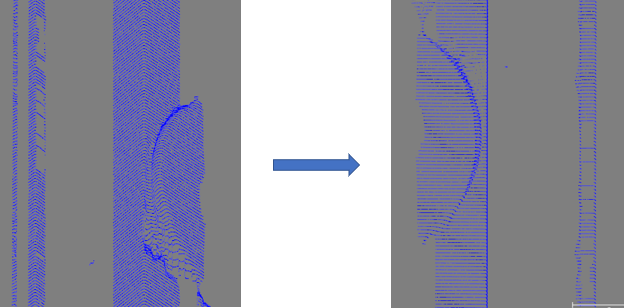
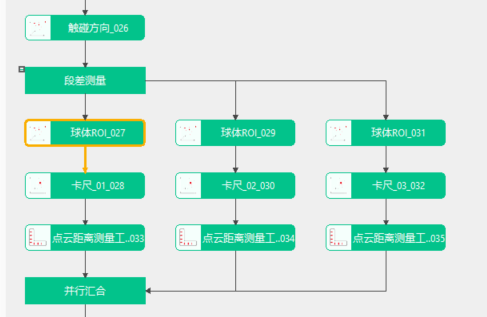
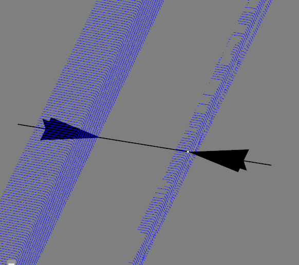
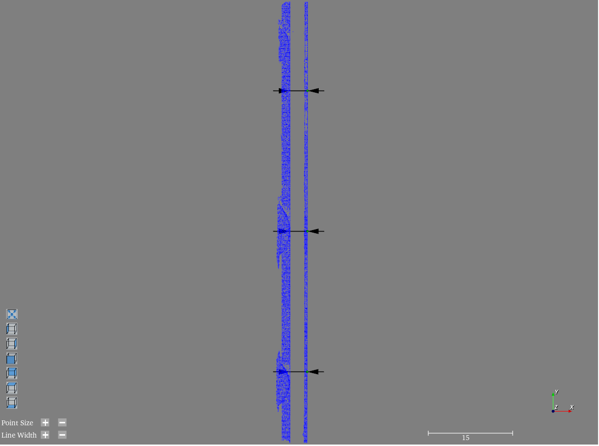

Đây là dự án chủ yếu đo sự chênh lệch chiều cao của chi tiết sản phẩm.
Như hình dưới, sản phẩm cần đo, chủ yếu đo chênh lệch chiều cao từ mép bên trong tới mặt phẳng chuẩn.



Căn chỉnh hệ tọa độ điểm mây
Tương tự như định vị sản phẩm, xác định tâm sản phẩm và di chuyển về gốc tọa độ, như hình dưới.


Đo chênh lệch điểm mây
Sử dụng công cụ thước cặp đo một điểm trên sản phẩm, sau đó dùng công cụ đo khoảng cách từ điểm tới mặt phẳng trên điểm mây để hoàn tất đo, như hình dưới.


Giao diện sản xuất hiển thị kết quả như hình dưới.

参见“\Samples\应用案例\测高类项目\点云测量项目\点云段差测量工程.gvp”。